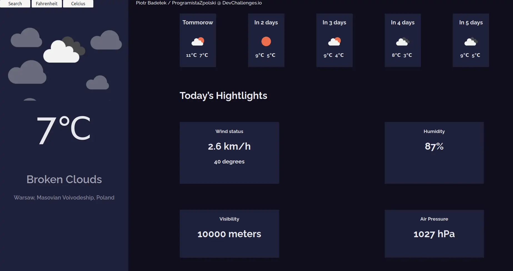

HTML CSS JavaScript JSON API
Projekt stworzony w ścieżce Front End Developer w devchallenges.io.
Stworzone za pomocą API OpenCage oraz API OpenWeatherMap. Funkcje:
- Konwenter z Celcius do Fahrenheit
- Ciśnienie powietrza
- Wilgoć
- Stan wiatru
- Maksymalna i minimalna temperatura każdego dnia
- Ikony pokazujące pogodę
- Pogoda na 5 dni
- Szukanie miast i wsi